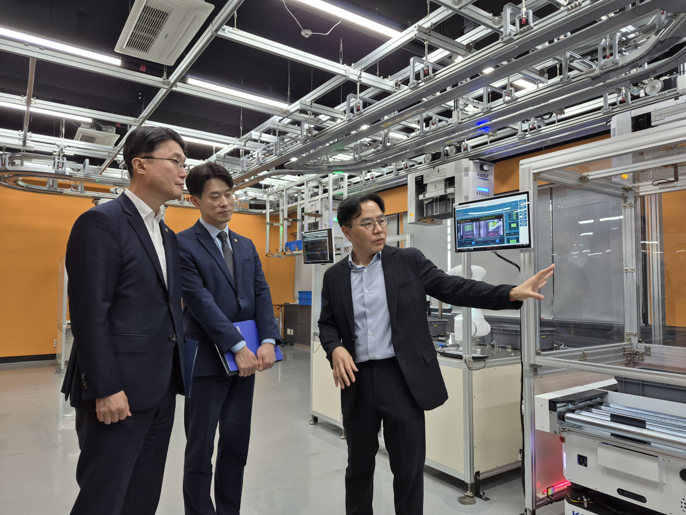

Executive Summary
On September 7 the Ministry of Science and ICT and the Ministry of SMEs and Startups visited the physical AI demonstration lab at KAIST together. In the material the two ministries put out, the reason small manufacturers cannot get new technology onto their floors is written as four items: skilled staff, experience with adopting technology, data, and demonstration opportunities. The first two shrink when people and consulting are added. The last two are a different kind of thing.
Neither ministry's press release explains why. The diagnosis is there and the reason is not. The people who gave a reason were the companies sitting in the meeting that day. Lee Sang-ho, CEO of IMPIX, said that even briefly halting a factory already in production is very hard, and that basic manufacturing infrastructure, data collection and digitization, has to come first before advanced physical AI reaches the floor. The data physical AI feeds on cannot be made outside the factory and poured in. The factory the government described as short on data is the only place that data comes from.
Sections 1 through 3 follow what the press releases and the reporting establish. Section 4, which turns to who holds the data and in what format it is kept, is this article's reading and is not in the announcement. Every quotation below is our translation from the Korean original.
Key Figures
Sources: MSIT press release and MSS press release (distributed 2026-09-07, for 09-08 morning papers), Etoday and HelloDD (2026-09-07)
Two of four
Shortage of data and of demonstration opportunities
The other two the government listed are skilled staff and experience with adopting technology
5th gen vs 2nd gen
What the technology talks about and what the floor runs
The gap Lee Jung-ho of Rainbow Robotics named at the meeting
2027
The year precision manufacturing data is due to be provided
Phase 1 this year is consulting on AMRs and AGVs in logistics zones
Not stated
Custody and format of the demonstration data
Not found in either ministry's press release or in the reporting on it
The Four Obstacles the Government Wrote Down
The two ministries visited the KAIST physical AI demonstration lab on September 7. The day ran in three parts: a tour of the lab, an introduction to the cooperation plan between the two ministries, and a meeting of supply and demand companies. Ryu Je-myung, Second Vice Minister of Science and ICT, and Noh Yong-seok, First Vice Minister of SMEs and Startups, were there, along with Joh Joon Hee, the private-sector chair of the Physical AI Alliance, and the heads of its subcommittees. The companies named in the footnote of both press releases are six: Rainbow Robotics, Persona AI, Pebblous, IMPIX, Baekje Food, and New Hi-Tech.
The part of the release worth pausing on is the diagnosis rather than the support plan. The government wrote the difficulty small manufacturers face this way.
Small manufacturing companies are having difficulty applying new technology on their actual sites, owing to shortages of skilled personnel and experience with adopting technology, and of data and demonstration opportunities.
The four items sit on one line, and the way out of each is not the same. Skilled staff is filled by training and hiring, and experience with adoption is filled by consulting and by leading cases. The collaboration announced that day is built for those two. It connects the science ministry's Everyone's AI Factory Manager with the SME ministry's Smart Manufacturing Innovation program, opening a path that runs from technology development through demonstration and commercialization to adoption on the floor. Vice Minister Noh said that building verified leading models for small manufacturers to benchmark is essential.
The back two are hard to fill by supply. Data and demonstration opportunities come into being as time passes in that factory, so they cannot be set down from outside as finished goods. The remarks at the meeting show the same difficulty plainly. Kim Cheol-yu, CEO of Baekje Food, said that adopting Everyone's AI Factory Manager right away is hard for a small company and that a little more time is needed, and that using physical AI efficiently would require the whole process to be turned into a smart factory and automated to some degree first. Lee Jung-ho, CEO of Rainbow Robotics, said that the industry talks about fifth-generation systems while many actual sites remain at the second generation, and that how to close that gap is the large task. The side selling the technology and the side buying it pointed at the same distance from the same table.
Data is also on the list of things the companies asked the government for. Both ministries issued a press release for the same event, most of the sentences match, and the lists part. In the science ministry's version a cooperation platform comes first, followed by expanded demonstration opportunities, support for using data, training of skilled staff, and stronger links between programs. The SME ministry's version puts, in the same slot, more sophisticated support policy, support for data-use infrastructure, training and education for skilled staff, and stronger links between programs. First on one list is expanded demonstration opportunities, and first on the other is more sophisticated support policy. Those words came from one room, and the record split once two people were writing it down.
That Data Comes Only From That Factory
The press releases describe physical AI as technology in which artificial intelligence perceives its surroundings, judges for itself, and carries out work. They do not explain why data, of all things, ended up on the obstacle list. Read both versions to the end and the single diagnostic sentence above is all there is. The reason came out the same day, at the meeting.
Lee Sang-ho of IMPIX spoke to why putting new technology into a running factory is hard. Halting a factory that is already in production, even for a moment, is a very difficult thing, he said, and existing small-manufacturer plants often lack both the room for an AGV or AMR to travel and an equipment layout that anticipates automation. He then proposed that basic manufacturing infrastructure, data collection and digitization among it, has to be in place before advanced physical AI can be applied on the floor. Why the shortage of data and the shortage of demonstration opportunities were written on the same line lives inside that remark. A line that cannot be stopped cannot be tested on, and what is never tested leaves no record.
KAIROS, the system opened to view at the KAIST lab that day, shows what such a record amounts to. In the demonstration lab set up in the Industrial and Systems Engineering building, a robot in motion stopped as a person stepped into the work area and said that an obstacle had been detected and asked the person to step aside for a moment. When a worker asked what was going on with a carrier that the system showed as present but that was not actually there, the system answered that the trouble was most likely on the load-detection sensor and said it would check the connection. The sensor's error, and the state the equipment was in at that moment, are the material that goes into training. That scene is made only in that factory.

KAIROS is short for KAIST AI Robot Orchestration System. Through digital-twin-based simulation it optimizes a real factory's logistics and schedule in real time, with the aim of letting a small company raise its factory operations without foreign solutions. Young Jae Jang, the KAIST professor leading the demonstration, called the core of KAIROS a single brain that moves the whole factory, a system that controls heterogeneous robots and equipment under one operating layer and joins the warehouse to the factory. He also laid out the distribution plan. Building the Everyone's AI Factory Manager solution as a cloud service together with KT and distributing it free to small companies is the phase one goal, he said; this year the team is building an AI logistics design lead, and the ambition is to grow it into an AI production operations lead that carries the knowledge of running a factory.
The small company receives this brain. The brain can be downloaded for free, and the material it learns and judges from has to come out of each company's own factory. That is also where data appears in the three-phase roadmap the government set out.
The precision manufacturing data written into phase 2 is the only item in this plan where data is named outright. The science ministry said it will take the full-stack technology secured through regional demonstrations, unmanned factory control and operation in Jeonbuk and ultra-precision manufacturing intelligence in Gyeongnam, and put it to work in adoption by small manufacturers. On what terms that data will be provided, neither press release says. One line about its form appears in HelloDD's report: the manufacturing data and solutions secured during research and development are to be supplied in a form small companies can put to use on the floor immediately. Which specification a form ready for immediate use refers to, and how far a company that receives it may go with it, has no next sentence.
The On-Premises Request and the Manufacturing AI 24 Loop
Handing data over came up at the meeting as well. According to HelloDD, companies in the room said that because data holding a firm's production methods and know-how is hard to disclose outside, on-premises environments that run AI inside the company, and lightweight AI models a small company can use, should be considered alongside the cloud. It is a request to keep the data from leaving the factory.
The diffusion plan announced the same day points the other way. The SME ministry said it will spread strong demonstration results to small companies through Manufacturing AI 24, a platform still to be built. It is an integrated manufacturing AI support platform that links manufacturing data, solutions, supplier companies, and government programs in one place. HelloDD reported that the ministry will build it from 2027 through 2029. Vice Minister Noh put it more sharply. So that this collaboration does not end at applying and verifying physical AI at individual companies but leads to a lively physical AI ecosystem, he said, the ministry means to press ahead even to establishing a data-based feedback system that lets small companies make use of strong results.
This passage carries a version difference too. The sentence just quoted is the one carried in the release issued by the science ministry. In the release issued by the SME ministry, the same vice minister's remarks close with a sentence saying that building verified leading models for companies to benchmark is essential and a sentence saying the ministry will concentrate its policy capacity. The phrase data-based feedback system does not appear in the SME ministry's version.
Two directions came out of one room on one day. Where the data meant to stay inside the factory parts from the data meant to be pooled and circulated is written in neither version.
The two directions do not have to collide. A design that keeps the raw data in the factory and sends out only the model or the metrics learned there is entirely workable. A design like that does not appear on its own, though. It gets built when the program rules say in advance what goes out, what stays, and whose the thing that went out becomes. This announcement was the step before that, an occasion for making the cooperation structure and the roadmap known.
What Is Left When the Demonstration Ends
That is as far as the announcement and the reporting establish. Seen from the data side, this plan has a few places where no answer has been attached yet.
A demonstration is a matter of bringing in equipment and, at the same time, a matter of making data. Sensor records, work histories, and defect cases pile up in the regional demonstrations in Jeonbuk and Gyeongnam, in the KAIST lab, and in each factory taking part in the smart factory program. When a program ends, the equipment stays in that factory. Unless it is settled where the data stays, the data stays nowhere.
Even if it stays, the next question follows. It is whether the data is in a shape that can travel to the next factory. Two plants making the same product still differ in how their equipment is combined and laid out, in the names they give to defects, and in how often they write a log. For one factory's records to be read by another, the field names, the units, and the measurement conditions have to line up. Data without a format ends as the asset of that one factory, and the feedback loop the government spoke of comes closer to a bulletin board of success stories.
One day's records already show as much. When the two ministries each wrote down what the companies asked for at the same meeting, the lists diverged from the first item, and the same vice minister's closing remarks were left in different sentences in each version. Records that people made by hand, sitting in one room, split once there are two of them. There is even less reason for records that factory equipment pours out without passing through a human hand to line up by themselves.
So Pebblous reads this program less through the distribution plan than through three sentences. Who holds the rights to the data made in a demonstration, in what format it is kept, and whether there is a way to check later that the format was followed. If those three go into the program notice, one demonstration becomes the starting point for the next. If they are left out, every demonstration gathers its data again from zero. The reason data shortage went onto the government's obstacle list in the first place is most likely that these three sentences have been missing all along.
The brain can be handed out for free. Data for that brain comes only from each company's own factory, and the format it is kept in is settled by program rules rather than by technology. That is the box still empty in this announcement.
Editor's Note
Pebblous was one of the six companies named in the footnote of both ministries' press releases as attending the KAIST meeting that day. The gap we meet most often when diagnosing manufacturing data quality is format and history. The values are piled up, and when the conditions they were measured under and the thing a field name points to are written down nowhere, that data stops being readable the moment it leaves the factory.
Thank you for reading this far. The facts here were checked first against the press releases issued separately by MSIT and MSS, then cross-read against Etoday's reporting from the demonstration lab, the meeting remarks carried by HelloDD, and coverage by AI Times and Money Today. Where the two press releases diverge, the body says so. If you have taken part in a demonstration program and written the custody and the format of the data into a contract, we would be glad to hear which sentences you used.
References
Official Announcements
- 1.Ministry of Science and ICT. (2026). "Physical AI Opens the Future of Small Manufacturing Sites" [press release, in Korean]. Korea Policy Briefing (korea.kr), 2026-09-07.
- 2.Ministry of SMEs and Startups. (2026). "Physical AI Opens the Future of Small Manufacturing Sites" [press release, in Korean]. Korea Policy Briefing (korea.kr), 2026-09-07.
News Coverage
- 3.Jang, S. (2026). "MSIT and MSS Jointly Support Physical AI Adoption at Small Manufacturers" [in Korean]. AI Times, 2026-09-07.
- 4.Kim, Y. (2026). ""Everyone's AI Factory Manager" Lowers the Cost Barrier for Small Manufacturers" [in Korean]. Etoday, 2026-09-07.
- 5.Hong, J. (2026). ""AI Factory Manager" Heads to the Factory Floor — MSIT and MSS Expand Physical AI Demonstrations" [in Korean]. HelloDD, 2026-09-07.
- 6.Koo, J. (2026). "MSIT and MSS Join Hands on Physical AI, Discuss Support for Small Manufacturers" [in Korean]. Money Today, 2026-09-07.